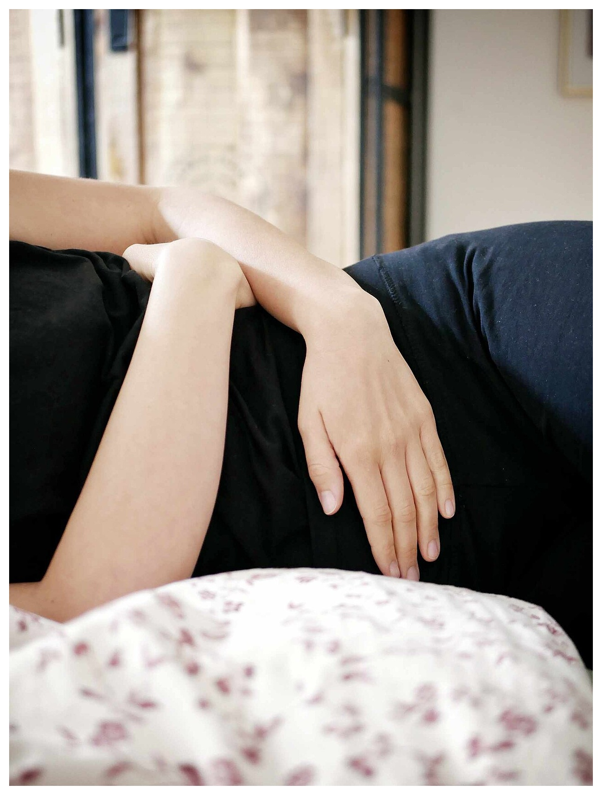

Vì Sao PMS Là Một Sự Kiện Thần Kinh – Nội Tiết Có Thật—Chứ Không Phải "Do Tâm Lý"?
Có tới 75% đến 80% phụ nữ trong độ tuổi sinh sản trải qua các triệu chứng thể chất hoặc cảm xúc trong 5 đến 10 ngày cuối của pha Hoàng thể—từ đau quặn vùng bụng dưới, căng tức ngực, tích nước cho đến dễ cáu gắt, ngủ chập chờn và thèm tinh bột hay sô-cô-la mãnh liệt.
Suốt nhiều thập kỷ, những triệu chứng tiền kinh nguyệt này thường bị xem nhẹ hoặc quy chụp là do "tâm lý nhạy cảm". Ngày nay, nội tiết học lâm sàng cùng kho dữ liệu sinh trắc học khổng lồ từ Oura Ring, WHOOP và Clue đã chứng minh rằng Hội chứng Tiền kinh nguyệt (PMS) và Thống kinh nguyên phát (Đau bụng kinh) được thúc đẩy bởi 3 chuỗi phản ứng sinh hóa hoàn toàn có thể đo lường được diễn ra từ Ngày 21 của chu kỳ đến Ngày 2 của kỳ kinh mới.

3 Động Cơ Sinh Hóa Đằng Sau Cơn Đau Bụng Kinh, Biến Động Tâm Trạng & Cơn Thèm Ăn
1. "Cơn Bão" Prostaglandin Tử Cung (PGF2α) → Đau Bụng Kinh & Rối Loạn Tiêu Hóa
Khi quá trình thụ thai không xảy ra, hoàng thể thoái hóa vào khoảng Ngày 24–28, kéo nồng độ Progesterone rơi tự do. Sự rút lui đột ngột của hormone này làm mất ổn định màng tiêu thể (Lysosome) bên trong tế bào nội mạc tử cung, giải phóng một lượng lớn Axit Arachidonic—nguyên liệu để enzyme Cyclooxygenase (COX) chuyển hóa thành các chất trung gian gây viêm Prostaglandin F2-alpha (PGF2α) và Prostaglandin E2 (PGE2):
- PGF2α gắn trực tiếp vào thụ thể cơ trơn tử cung, kích hoạt những đợt co thắt đẩy áp lực trong buồng tử cung vượt ngưỡng 150 đến 300 mmHg (cao hơn cả áp lực cơn gò chuyển dạ giai đoạn 1!).
- Những đợt co thắt liên hồi này ép chặt các động mạch xoắn, làm cơ tử cung bị thiếu oxy tạm thời (Thiếu máu cục bộ tử cung — Uterine Ischemia)—nguyên nhân sinh học trực tiếp gây ra cơn đau bụng kinh quặn thắt.
- Khi lượng PGF2α dư thừa tràn vào tuần hoàn máu chung, chúng đồng thời kích thích cơ trơn đường ruột co bóp mạnh, giải thích vì sao tiêu chảy hoặc buồn nôn ngày đầu kỳ kinh thường xuyên đi kèm với đau bụng kinh!
2. Sự Sụt Giảm Serotonin & Allopregnanolone → Biến Động Tâm Trạng & Giấc Ngủ
Vì sao bạn có thể cảm thấy vô cùng bình tĩnh vào Ngày 18 nhưng lại bỗng nhiên lo âu hoặc dễ xúc động vào Ngày 26? - Mối liên kết Estrogen – Serotonin: Estradiol kích thích enzyme tổng hợp Serotonin (hormone hạnh phúc) và làm chậm quá trình phân hủy nó. Khi Estradiol lao dốc vào cuối pha Hoàng thể, lượng Serotonin tại khe synap thần kinh cũng sụt giảm theo. - Nghịch lý Progesterone – GABA: Não bộ chuyển hóa Progesterone thành một chất dẫn truyền thần kinh có tác dụng an thần tự nhiên gọi là Allopregnanolone (ALLO), gắn vào thụ thể GABA-A (chân phanh giúp làm dịu não bộ). Khi Progesterone và ALLO tụt giảm nhanh trước kỳ kinh, các thụ thể GABA rơi vào trạng thái "thiếu hụt đột ngột"—khiến hệ thần kinh trở nên nhạy cảm quá mức trước những căng thẳng thường ngày.
3. Mức Tăng Chuyển Hóa +100 Đến +250 kcal/Ngày → Vì Sao Bạn Thèm Tinh Bột & Sô-cô-la?
Nếu bạn cảm thấy đói nhanh hơn hẳn trong tuần lễ trước kỳ kinh, cơ thể không hề đánh lừa bạn. Các nghiên cứu đo nhiệt lượng gián tiếp (Benton et al., PLOS ONE 2020; Webb, AJCN) chứng minh rằng Progesterone làm tăng Tốc độ trao đổi chất cơ bản (BMR) thêm 5% đến 10%—tương đương đốt thêm +100 đến +250 kcal mỗi ngày trong pha Hoàng thể! Đồng thời, não bộ phát tín hiệu thèm tinh bột để tăng nhẹ Insulin, giúp vận chuyển axit amin L-tryptophan vượt qua hàng rào máu não nhằm tái tạo lượng Serotonin đang thiếu hụt.
Phác Đồ Vi Chất Dinh Dưỡng Dựa Trên Bằng Chứng Lâm Sàng Cho PMS & Đau Bụng Kinh
Thay vì đợi đến Ngày 1 đau quặn mới uống thuốc giảm đau, các thử nghiệm lâm sàng ngẫu nhiên có đối chứng (RCTs) đăng trên American Journal of Obstetrics and Gynecology (AJOG) và Cochrane Reviews đã xác thực 5 vi chất đánh trúng gốc rễ sinh hóa của PMS:
| Vi Chất / Hợp Chất | Liều Lượng Lâm Sàng & Thời Điểm Dùng | Cơ Chế Tác Động Sinh Hóa | Bằng Chứng Thử Nghiệm Lâm Sàng (RCT) |
|---|---|---|---|
| 1. Canxi (Calcium Carbonate / Citrate) | 1.000 – 1.200 mg/ngày (Chia làm 2 lần 500–600 mg trong bữa ăn) |
Điều hòa hormone tuyến cận giáp và kênh dẫn truyền thần kinh – cơ; là khuyến nghị vi chất số 1 của Hiệp hội Sản Phụ khoa Hoa Kỳ (ACOG) cho PMS. | Thys-Jacobs et al. (AJOG, 1998): Thử nghiệm đa trung tâm trên 466 phụ nữ cho thấy giảm 48% tổng điểm triệu chứng PMS (tâm trạng, tích nước, đau bụng) sau 3 chu kỳ. |
| 2. Magie Bisglycinate | 300 – 400 mg/ngày (Uống trước khi ngủ 60 phút, đặc biệt từ Ngày 15–28) |
Hoạt động như chất chẹn kênh Canxi sinh lý tự nhiên giúp giãn cơ trơn tử cung; giảm nồng độ PGF2α trong máu kinh và làm dịu thụ thể GABA giúp ngủ sâu. |
Fathizadeh et al. (2010) & Fontana-Klaiber: Giảm rõ rệt mức độ đau bụng kinh, chứng tích nước tiền kinh nguyệt và mất ngủ—đặc biệt hiệu quả khi kết hợp cùng Vitamin B6. |
| 3. Vitamin B6 (Pyridoxine / P-5-P) | 50 – 80 mg/ngày (Không dùng quá 100 mg/ngày kéo dài) |
Cofactor enzyme thiết yếu (AADC) để chuyển hóa 5-HTP thành Serotonin và L-DOPA thành Dopamine, đồng thời hỗ trợ gan chuyển hóa Estrogen dư thừa. |
Wyatt et al. (BMJ Meta-Analysis, 1999): Phân tích gộp trên 940 bệnh nhân xác nhận cải thiện đáng kể tình trạng trầm cảm nhẹ, cáu gắt và mệt mỏi trước kỳ kinh. |
| 4. Axit Béo Omega-3 (EPA + DHA) | 1.500 – 2.000 mg/ngày (Chứa ≥ 1.000 mg EPA từ dầu cá hoặc dầu tảo) |
EPA cạnh tranh trực tiếp với Axit Arachidonic trên màng tế bào, chuyển hướng tổng hợp khỏi PGF2α gây co thắt sang PGE3 kháng viêm. |
Rahbar et al. (2012) & Harel et al. (AJOG): Giảm cường độ đau bụng kinh và cắt giảm hơn 50% nhu cầu dùng thuốc giảm đau Ibuprofen sau 2–3 tháng. |
| 5. Chiết Xuất Gừng (Zingiber officinale) | 250 mg (hoặc 1g gừng tươi) × 3–4 lần/ngày (Từ 2 ngày trước kỳ kinh đến Ngày 3) |
Ức chế kép tự nhiên cả hai enzyme COX (Cyclooxygenase) và LOX (Lipoxygenase), chặn đứng quá trình sản sinh Prostaglandin và Leukotriene ngay tại nguồn. | Ozgoli et al. (2009) & Daily et al. (Pain Medicine, 2015): Chứng minh hiệu quả giảm đau bụng kinh tương đương với 400 mg Ibuprofen hoặc Mefenamic acid! |
Tín Hiệu Thực Tế Trên Thiết Bị Đeo: Nhận Diện PMS Qua Biểu Đồ Đồng Hồ
Đồng hồ hoặc nhẫn thông minh của bạn hoạt động như một radar cảnh báo sớm áp lực pha Hoàng thể:
- Cú Sụt Giảm HRV Cuối Pha Hoàng Thể: Từ Ngày 23 đến Ngày 27, nhiều phụ nữ ghi nhận chỉ số HRV ban đêm chạm mức thấp nhất tháng trong khi Nhịp tim lúc nghỉ (RHR) đạt đỉnh (+4 đến +8 bpm) và giấc ngủ bị phân mảnh nhiều hơn.
- Cách Rượu Bia & Đồ Ăn Mặn Khuếch Đại Triệu Chứng: Dữ liệu thực tế từ người dùng WHOOP và Oura cho thấy việc uống rượu bia hoặc ăn thực phẩm chế biến sẵn nhiều muối trong 5 ngày cuối pha Hoàng thể gây ra mức sụt giảm HRV và tình trạng sưng phù tích nước nặng gấp đôi so với pha Nang trứng, bởi gan và hệ thống cân bằng dịch đang phải làm việc hết công suất để chuyển hóa Progesterone.
Phác Đồ Hành Động 4 Bước Cho Pha Hoàng Thể & Kỳ Kinh Nhẹ Nhàng
- Tôn Trọng Nhu Cầu Năng Lượng Tăng Thêm (+150–200 kcal/Ngày): Đừng cố ép mình nhịn ăn khắc nghiệt khi cơn đói pha Hoàng thể xuất hiện (việc tụt đường huyết sẽ làm tâm trạng tệ hơn gấp bội). Hãy bổ sung một bữa phụ thông minh vào buổi chiều kết hợp tinh bột phức hợp + đạm + chất béo tốt—chẳng hạn sữa chua Hy Lạp trộn quả mọng và 30g sô-cô-la đen 85% (cung cấp tự nhiên ~65 mg Magie cùng polyphenol nâng đỡ tâm trạng!).
- Khởi Động Tổ Hợp Kháng Viêm Từ Ngày 18 (Đừng Đợi Đến Ngày 1): Vì Prostaglandin tích tụ trong tế bào tử cung trước khi máu kinh xuất hiện, hãy tăng cường cá béo giàu Omega-3 (cá hồi, cá thu), uống Magie Glycinate buổi tối và trà gừng ấm từ 5 đến 7 ngày trước ngày dự kiến hành kinh.
- Ứng Dụng Liệu Pháp Nhiệt 40°C Tại Chỗ: Thử nghiệm lâm sàng (Akin et al., Obstetrics & Gynecology) chứng minh việc chườm ấm vùng bụng dưới ở nhiệt độ 40°C (104°F) giúp làm giãn tức thì các bó cơ trơn tử cung đang co thắt và khôi phục lưu thông máu hiệu quả ngang với thuốc giảm đau liều thấp.
- Nhận Biết Khi Nào Cần Thăm Khám Bác Sĩ Chuyên Khoa: Trong khi đau bụng kinh mức độ nhẹ đến vừa vào Ngày 1–2 đáp ứng rất tốt với dinh dưỡng và lối sống, cơn đau vùng chậu dữ dội khiến bạn không thể đi làm, đau khi quan hệ tình dục, hoặc lượng máu kinh quá nhiều (phải thay băng vệ sinh mỗi giờ) không phải là PMS bình thường—hãy thăm khám bác sĩ phụ khoa để tầm soát Lạc nội mạc tử cung (Endometriosis), Cơ tuyến tử cung (Adenomyosis) hoặc U xơ tử cung.
Tài Liệu Tham Khảo & Nguồn Y Khoa
- Thys-Jacobs, S., Starkey, P., Bernstein, D., & Tian, J. (1998). Calcium carbonate and the premenstrual syndrome: effects on premenstrual and menstrual symptoms. American Journal of Obstetrics and Gynecology (AJOG), 179(2), 444–452. https://pubmed.ncbi.nlm.nih.gov/9731851/
- Fathizadeh, N., Ebrahimi, E., Valiani, M., Tavakoli, N., & Yar, M. H. (2010). Evaluating the effect of supplementation with magnesium and vitamin B6 on premenstrual syndrome. Iranian Journal of Nursing and Midwifery Research (NIH PMC), 15(Suppl 1), 401–405. https://pubmed.ncbi.nlm.nih.gov/22069417/
- Daily, J. W., Zhang, X., Kim, D. S., & Park, S. (2015). Efficacy of Ginger for Alleviating the Symptoms of Primary Dysmenorrhea: A Systematic Review and Meta-analysis of Randomized Clinical Trials. Pain Medicine, 16(12), 2243–2255. https://pubmed.ncbi.nlm.nih.gov/26177393/
- American College of Obstetricians and Gynecologists (ACOG). Clinical Management of Premenstrual Syndrome (PMS) and Dysmenorrhea. https://www.acog.org/womens-health/faqs/premenstrual-syndrome